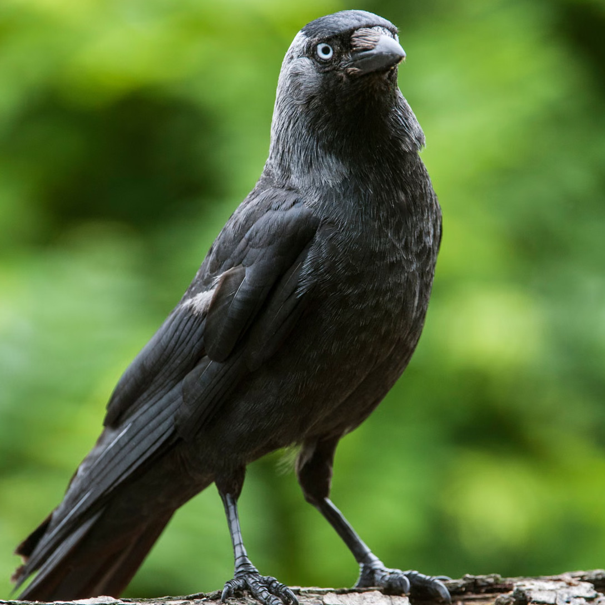
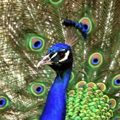

Liber Primus
Aesopus auctor quam materiam
repperitmateriam quam Aesopus auctor
repperit,
hanc ego polivi versibus
senariissex per.
Duplex
libelli
dosingenium est: quod risum movet
et quod prudenti vitam consilio monet.
Calumniariperperam increpare si quis autem
voluerit,
quod arbores loquantur, non
tantum ferae,
fictis iocari nos meminerit
fabulis.
Ad rivum eundem
lupus et agnus venerant,
siti compulsi.
Superior stabat lupus,
longeque inferior
agnus. Tunc fauce
improbafaux non probata est
latro incitatus iurgii causam intulit;
“Cur” inquit “turbulentam fecisti mihi
aquam bibenti?”
Lanigerlanam gerens = agnus contra timens,
“Quiquomodo possum, quaeso, facere quod quereris,
lupe?
A te decurrit ad meos
haustusad potús meos liquor”.
Repulsus ille veritatis viribus,
“Ante hos sex menses male,” ait, “dixisti mihi.”
Respondit agnus, “Equidem natus non eram.”
“Pater hercle tuus,” ille inquit, “male dixit
mihi.”
Atque ita correptum
laceratlacero, are iniusta
neceiniusta nece = morte iniusta.
Haec propter illos scripta est homines
fabulahaec fabula scripta est propter illos
homines
qui fictis causis
innocentes opprimunt.
Athenae cum
florerentbene ferrent aequis legibus,
procaximpudens libertas civitatem
miscuitmovit,
frenumqueid quo equus retineatur solvit
pristinumantiquum licentia.
Hic conspiratis factionum partibus
arcem tyrannus occupat Pisistratus.
Cum tristem servitutem flerent Attici,
non quia crudelis ille, sed quoniam grave
omne insuetis
onusomne onus grave est eis qui insueti sunt onerum,
et coepissent queri,
Aesopus talem tum
fabellam rettulit.
“Ranae, vagantes
liberis paludibus,
clamore magno regem
petiere ab Iove,
qui dissolutos mores vi
compesceretcontineret.
Pater
deorum risit atque illis dedit
parvum
tigillumlignum, missum
quodquod missum subito vadi
motu sonoque terruit pavidum genus.
Hoc mersum
limoluto cum iaceret diutius,
forte una tacite profert e stagno caput,
et explorato rege cunctas evocat.
Illae timore
positodeposito
certatimstudiose adnatant,
lignumque supra turba petulans insilit.
Quod cum
inquinassentpolluissent omni contumelia,
alium rogantes regem
miseredesperate ad Iovem,
inutilis quoniam esset qui fuerat
datusquoniam is qui fuerat datus inutilis
esset.
Tum misit illis hydrum, qui
dente aspero
corripere coepit singulas.
Frustra necem
fugitant
inertesimbecilles; vocem praecludit metus.
Furtim igitur dant Mercurio mandata ad
Iovem,
adflictis ut succurrat. Tunc contra
Tonans
‘Quia noluistis vestrum ferre’,
inquit, ‘bonum,
malum
perfertemalum gerite!.’ Vos quoque, o cives,”
aitait Aesopus,
“hoc
sustinete, maius ne veniat, malum.”
Ne gloriari
libeatplaceat alienis bonis,
suoque potius
habitusuo habitu = suo statu vitam
degerevitam degere = vivere,
Aesopus nobis hoc exemplum prodidit.
Tumens
inaniinané
graculus superbia
pinnas,
pavoni quae
deciderantpinnas pavonis quae deciderant,
sustulit,
seque exornavit. Deinde,
contemnens suos
immiscetinterponit se pavonum formoso gregi.
Illi impudenti pinnas eripiunt avi,
fugantque
rostrisad fugam rostris suis graculum
compellunt.
Male mulcatus
graculus
redire maerens coepit ad proprium
genus,
a quo repulsus tristem sustinuit
notam.
Tum quidam ex illis quos prius
despexerat
‘Contentus nostris si fuisses
sedibus
et quod Natura dederat voluisses
pati,
nec illam expertus esses
contumeliam
nec hanc repulsam tua sentiret
calamitas.’
Amittit merito proprium qui alienum
adpetit.
Canis, per fluvium carnem cum
ferret, natans
lympharum in speculo vidit
simulacrum suum,
aliamque praedam ab
altero ferri putans
eripere voluit; verum
decepta aviditas
et quem tenebat ore
dimisit cibum,
nec quem petebat adeo
potuit tangere.
Numquam est fidelis cum potente
societas.
Testatur haec fabella propositum
meum.
Vacca et capella et patiens ovis
iniuriae
socii fuere cum leone in
saltibus.
Hi cum cepissent cervum vasti
corporis,
sic est locutus partibus factis
leo:
‘Ego primam tollo nomine hoc quia rex
cluo;
secundam, quia sum consors,
tribuetis mihi;
tum, quia plus valeo, me
sequetur tertia;
malo adficietur si quis
quartam tetigerit.’
Sic totam praedam sola
improbitas abstulit.
Vicini furis celebres vidit nuptias
Aesopus, et continuo narrare incipit -
Uxorem quondam Sol cum vellet ducere,
clamorem ranae sustulere ad sidera.
Convicio permotus quaerit Iuppiter
causam querellae. Quaedam tum stagni incola
‘Nunc’ inquit ‘omnes unus exurit lacus,
cogitque miseras arida sede emori.
Quidnam futurum est si crearit liberos?’
Personam tragicam forte vulpes viderat;
quam postquam huc illuc semel atque iterum
verterat,
‘O quanta species’ inquit
‘cerebrum non habet!’
Hoc illis dictum est
quibus honorem et gloriam
Fortuna tribuit,
sensum communem abstulit.
Qui pretium meriti ab improbis
desiderat,
bis peccat: primum quoniam
indignos adiuvat,
impune abire deinde quia
iam non potest.
Os devoratum fauce cum
haereret lupi,
magno dolore victus coepit
singulos
inlicere pretio ut illud
extraherent malum.
Tandem persuasa est
iureiurando gruis,
gulae quae credens
colli longitudinem
periculosam fecit
medicinam lupo.
Pro quo cum pactum
flagitaret praemium,
‘Ingrata es’ inquit
‘ore quae nostro caput
incolume abstuleris
et mercedem postules.’
Sibi non cavere et aliis consilium dare
stultum esse paucis ostendamus versibus.
Oppressum ab aquila, fletus edentem
graves,
leporem obiurgabat passer ‘Ubi
pernicitas
nota’ inquit ‘illa est? Quid
ita cessarunt pedes?’
Dum loquitur, ipsum
accipiter necopinum rapit
questuque vano
clamitantem interficit.
Lepus semianimus
‘Mortis en solacium:
qui modo securus
nostra inridebas mala,
simili querella
fata deploras tua.’
Quicumque turpi fraude semel innotuit,
etiam si verum dicit, amittit fidem.
Hoc adtestatur brevis Aesopi fabula.
Lupus arguebat vulpem furti crimine;
negabat illa se esse culpae proximam.
Tunc iudex inter illos sedit simius.
Uterque causam cum perorassent suam,
dixisse fertur simius sententiam:
‘Tu non videris perdidisse quos petis;
te credo subripuisse quod pulchre negas.’
Virtutis expers, verbis iactans
gloriam,
ignotos fallit, notis est
derisui.
Venari asello comite cum vellet
leo,
contexit illum frutice et admonuit
simul
ut insueta voce terreret
feras,
fugientes ipse exciperet. Hic
auritulus
clamorem subito totis tollit
viribus,
novoque turbat bestias
miraculo:
quae, dum paventes exitus notos
petunt,
leonis adfliguntur horrendo
impetu.
Qui postquam caede fessus est,
asinum evocat,
iubetque vocem premere.
Tunc ille insolens
‘Qualis videtur opera
tibi vocis meae?’
‘Insignis’ inquit ‘sic
ut, nisi nossem tuum
animum genusque,
simili fugissem metu.’
Laudatis utiliora quae contempseris,
saepe inveniri testis haec narratio est.
Ad fontem cervus, cum bibisset, restitit,
et in liquore vidit effigiem suam.
Ibi dum ramosa mirans laudat cornua
crurumque nimiam tenuitatem vituperat,
venantum subito vocibus conterritus,
per campum fugere coepit, et cursu levi
canes elusit. Silva tum excepit ferum;
in qua retentis impeditus cornibus
lacerari coepit morsibus saevis canum.
Tum moriens edidisse vocem hanc dicitur:
‘O me infelicem, qui nunc demum intellego,
utilia mihi quam fuerint quae despexeram,
et, quae laudaram, quantum luctus
habuerint.’
Quae se laudari gaudent verbis
subdolis,
serae dant poenas turpi
paenitentia.
Cum de fenestra corvus raptum
caseum
comesse vellet, celsa residens
arbore,
vulpes invidit, deinde sic coepit
loqui:
‘O qui tuarum, corve, pinnarum est
nitor!
Quantum decoris corpore et vultu
geris!
Si vocem haberes, nulla prior ales
foret.’
At ille, dum etiam vocem vult
ostendere,
lato ore emisit caseum; quem
celeriter
dolosa vulpes avidis rapuit
dentibus.
Tum demum ingemuit corvi
deceptus stupor.
Malus cum sutor inopia deperditus
medicinam ignoto facere coepisset loco
et venditaret falso antidotum nomine,
verbosis adquisivit sibi famam strophis.
Hic cum iaceret morbo confectus gravi
rex urbis, eius experiendi gratia
scyphum poposcit: fusa dein simulans aqua
illius se miscere antidoto toxicum,
combibere iussit ipsum, posito praemio.
Timore mortis ille tum confessus est,
non artis ulla medicum se prudentia,
verum stupore vulgi, factum nobilem.
Rex advocata contione haec edidit:
‘Quantae putatis esse vos dementiae,
qui capita vestra non dubitatis credere,
cui calceandos nemo commisit pedes?’
Hoc pertinere vere ad illos dixerim,
quorum stultitia quaestus impudentiae est.
In principatu commutando civium
nil praeter domini nomen mutant pauperes.
Id esse verum, parva haec fabella indicat.
Asellum in prato timidus pascebat senex.
Is hostium clamore subito territus
suadebat asino fugere, ne possent capi.
At ille lentus ‘Quaeso, num binas mihi
clitellas impositurum victorem putas?’
Senex negavit. ‘Ergo, quid refert mea
cui serviam, clitellas dum portem unicas?’
Fraudator homines cum advocat sponsum
improbos,
non rem expedire, sed malum
ordiri expetit.
Ovem rogabat cervus modium
tritici,
lupo sponsore. At illa,
praemetuens dolum,
‘Rapere atque abire
semper adsuevit lupus;
tu de conspectu
fugere veloci impetu.
Ubi vos requiram,
cum dies advenerit?’
Solent mendaces luere poenas malefici.
Calumniator ab ove cum peteret canis,
quem commendasse panem se contenderet,
lupus, citatus testis, non unum modo
deberi dixit, verum adfirmavit decem.
Ovis, damnata falso testimonio,
quod non debebat, solvit. Post paucos dies
bidens iacentem in fovea prospexit lupum.
‘Haec’ inquit ‘merces fraudis a superis
datur.’
Nemo libenter recolit qui laesit locum.
Instante partu mulier actis mensibus
humi iacebat, flebilis gemitus ciens.
Vir est hortatus, corpus lecto reciperet,
onus naturae melius quo deponeret.
‘Minime’ inquit ‘illo posse confido loco
malum finiri quo conceptum est initio.’
Habent insidias hominis blanditiae
mali;
quas ut vitemus, versus subiecti
monent.
Canis parturiens cum rogasset
alteram,
ut fetum in eius tugurio
deponeret,
facile impetravit. Dein
reposcenti locum
preces admovit, tempus
exorans breve,
dum firmiores catulos
posset ducere.
Hoc quoque consumpto
flagitari validius
cubile coepit. ‘Si mihi
et turbae meae
par’ inquit ‘esse potueris,
cedam loco.’
Stultum consilium non modo effectu
caret,
sed ad perniciem quoque mortalis
devocat.
Corium depressum in fluvio
viderunt canes.
Id ut comesse extractum
possent facilius,
aquam coepere ebibere:
sed rupti prius
periere quam quod
petierant contingerent.
Quicumque amisit dignitatem pristinam,
ignavis etiam iocus est in casu gravi.
Defectus annis et desertus viribus
leo cum iaceret spiritum extremum trahens,
aper fulmineis spumans venit dentibus,
et vindicavit ictu veterem iniuriam.
Infestis taurus mox confodit cornibus
hostile corpus. Asinus, ut vidit ferum
impune laedi, calcibus frontem extudit.
At ille exspirans ‘Fortis indigne tuli
mihi insultare: Te, Naturae dedecus,
quod ferre certe cogor bis videor mori.’
Mustela ab homine prensa, cum instantem
necem
effugere vellet, ‘Parce, quaeso’,
inquit ‘mihi,
quae tibi molestis muribus
purgo domum.’
Respondit ille ‘Faceres si
causa mea,
gratum esset et dedissem veniam
supplici.
Nunc quia laboras ut fruaris
reliquiis,
quas sunt rosuri, simul et
ipsos devores,
noli imputare vanum
beneficium mihi.’
Atque ita locutus
improbam leto dedit.
Hoc in se dictum
debent illi agnoscere,
quorum privata
servit utilitas sibi,
et meritum inane
iactant imprudentibus.
Repente liberalis stultis gratus est,
verum peritis inritos tendit dolos.
Nocturnus cum fur panem misisset cani,
obiecto temptans an cibo posset capi,
‘Heus’, inquit ‘linguam vis meam praecludere,
ne latrem pro re domini? Multum falleris.
Namque ista subita me iubet benignitas
vigilare, facias ne mea culpa lucrum.’
Inops, potentem dum vult imitari,
perit.
In prato quondam rana conspexit
bovem,
et tacta invidia tantae
magnitudinis
rugosam inflavit pellem. Tum
natos suos
interrogavit an bove esset
latior.
Illi negarunt. Rursus intendit
cutem
maiore nisu, et simili quaesivit
modo,
quis maior esset. Illi dixerunt
‘bovem.’
Novissime indignata, dum vult
validius
inflare sese, rupto iacuit
corpore.
Consilia qui dant prava cautis
hominibus
et perdunt operam et deridentur
turpiter.
Canes currentes bibere in Nilo
flumine,
a corcodillis ne rapiantur,
traditum est.
Igitur cum currens bibere
coepisset canis,
sic corcodillus
‘Quamlibet lambe otio,
noli vereri.’ At
ille ‘Facerem mehercules,
nisi esse scirem
carnis te cupidum meae.’
Nulli nocendum: si quis vero laeserit,
multandum simili iure fabella admonet.
Ad cenam vulpes dicitur ciconiam
prior invitasse, et liquidam in patulo marmore
posuisse sorbitionem, quam nullo modo
gustare esuriens potuerit ciconia.
Quae, vulpem cum revocasset, intrito cibo
plenam lagonam posuit; huic rostrum inserens
satiatur ipsa et torquet convivam fame.
Quae cum lagonae collum frustra lamberet,
peregrinam sic locutam volucrem accepimus:
‘Sua quisque exempla debet aequo animo
pati.’
Haec res avaris esse conveniens potest,
et qui, humiles nati, dici locupletes
student.
Humana effodiens ossa thesaurum
canis
invenit, et, violarat quia Manes
deos,
iniecta est illi divitiarum
cupiditas,
poenas ut sanctae religioni
penderet.
Itaque, aurum dum custodit
oblitus cibi,
fame est consumptus. Quem
stans vulturius super
fertur locutus ‘O
canis, merito iaces,
qui concupisti subito
regales opes,
trivio conceptus, educatus
stercore.’
Quamvis sublimes debent humiles
metuere,
vindicta docili quia patet
sollertiae.
Vulpinos catulos aquila
quondam sustulit,
nidoque posuit pullis
escam ut carperent.
Hanc persecuta mater
orare incipit,
ne tantum miserae luctum
importaret sibi.
Contempsit illa, tuta
quippe ipso loco.
Vulpes ab ara rapuit
ardentem facem,
totamque flammis arborem
circumdedit,
hosti dolorem damno miscens
sanguinis.
Aquila, ut periclo mortis
eriperet suos,
incolumes natos supplex
vulpi reddidit.
Plerumque stulti, risum dum captant
levem,
gravi destringunt alios
contumelia,
et sibi nocivum concitant
periculum.
Asellus apro cum fuisset
obvius,
‘Salve’ inquit ‘frater.’ Ille
indignans repudiat
officium, et quaerit
cur sic mentiri velit.
Asinus demisso pene
‘Similem si negas
tibi me esse, certe
simile est hoc rostro tuo.’
Aper, cum
vellet facere generosum impetum,
repressit
iram et ‘Facilis vindicta est mihi:
sed
inquinari nolo ignavo sanguine.’
Humiles laborant ubi potentes
dissident.
Rana e palude pugnam taurorum
intuens,
‘Heu, quanta nobis instat
pernicies’ ait.
interrogata ab alia cur
hoc diceret,
de principatu cum illi
certarent gregis
longeque ab ipsis
degerent vitam boves,
‘Sit statio separata
ac diversum genus;
expulsus regno nemoris
qui profugerit,
paludis in secreta veniet
latibula,
et proculcatas obteret duro
pede.
Ita caput ad nostrum furor illorum
pertinet.’